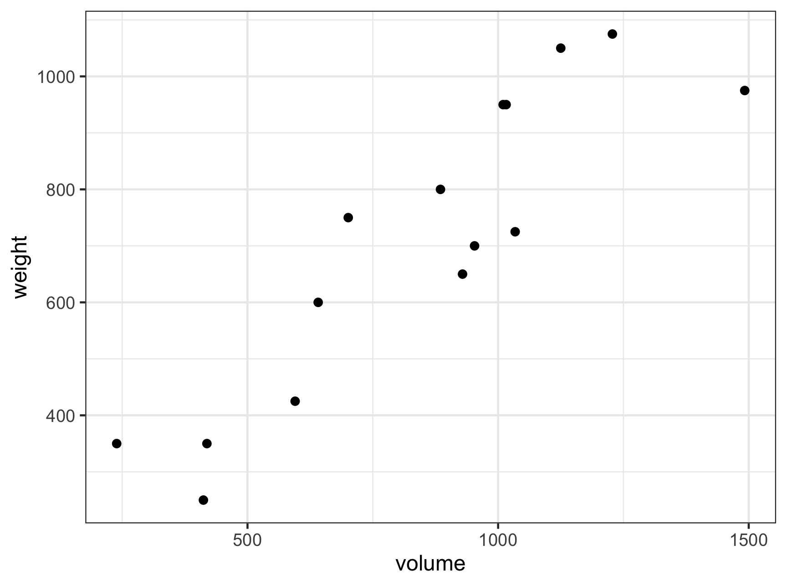
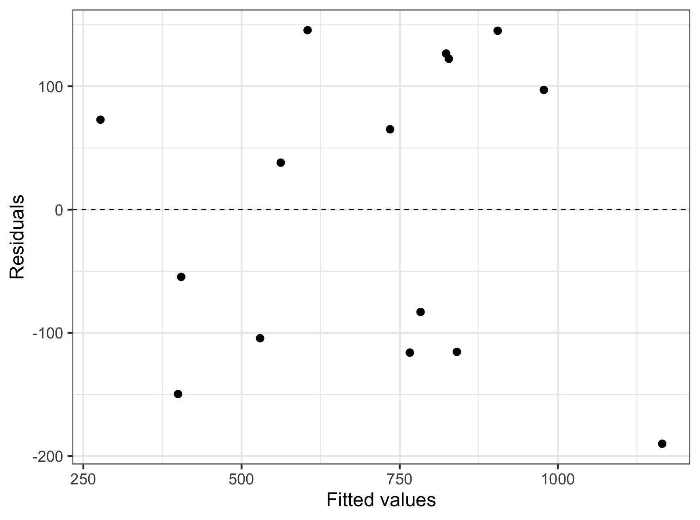
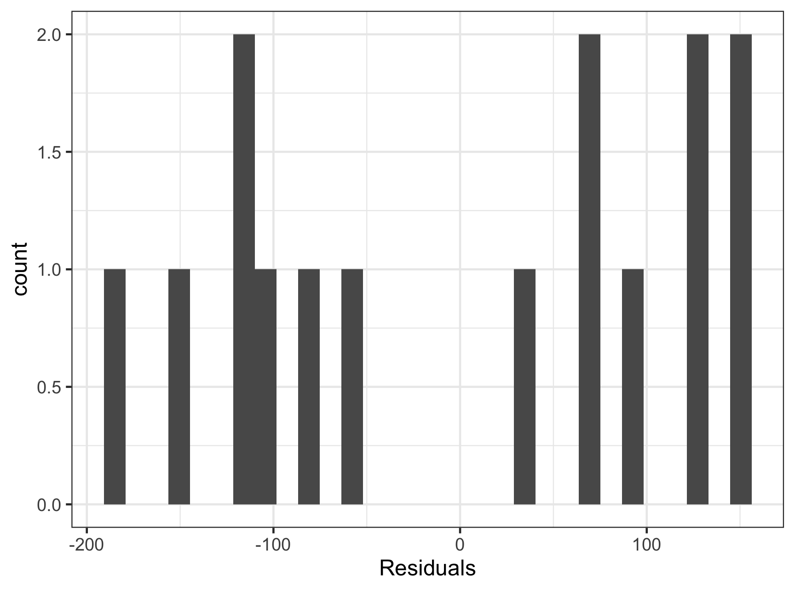
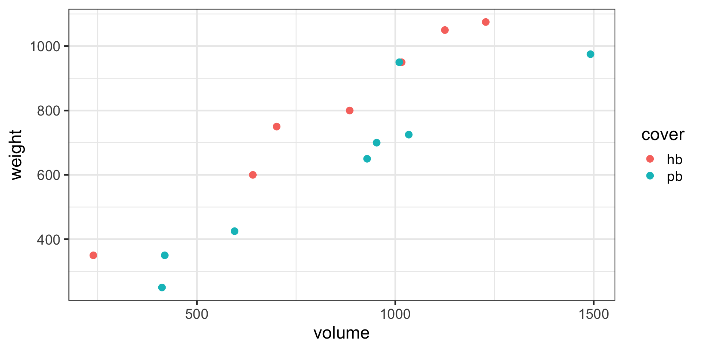
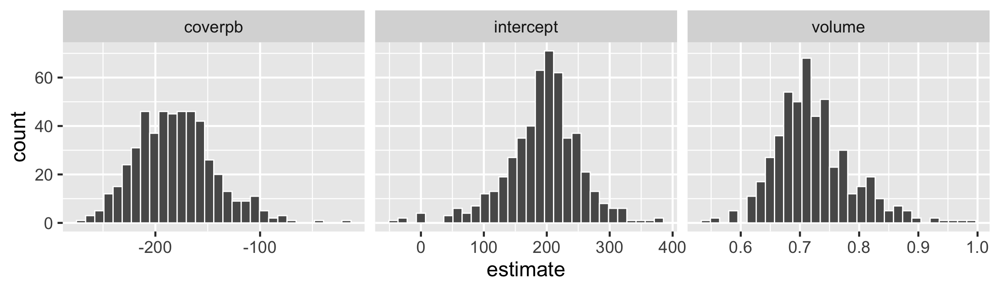
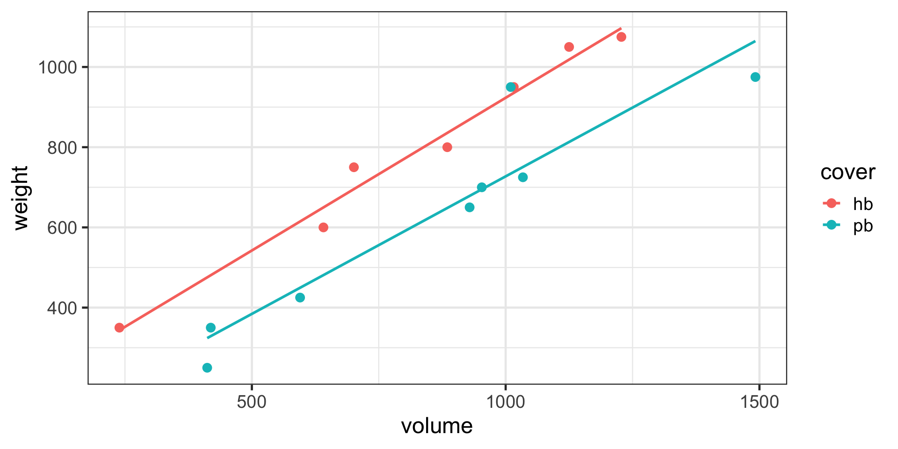
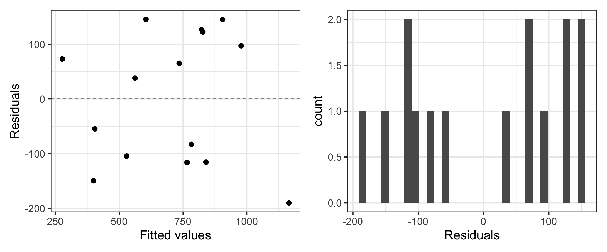
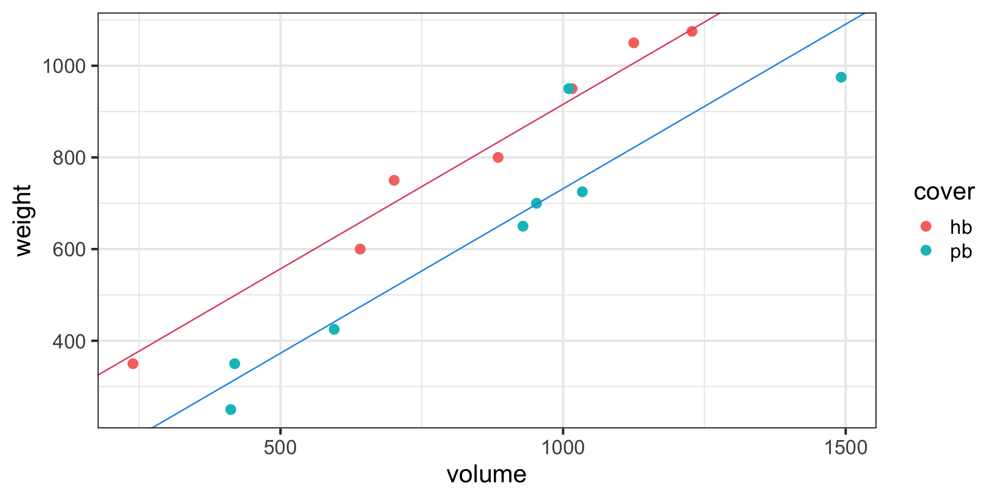

Adding Complexity
STAT 20 UC Berkeley
That is simple linear regression. Let’s begin to add some complexity.
Example: shipping books

When you buy a book off of Amazon, you get a quote for how much it costs to ship. This is based on the weight of the book. If you didn’t know the weight a book, what other characteristics of it could you measure to help predict weight?
The data
Consider the following data set, a simple random sample of books from Amazon’s catalog where the weight of the books is known.
# A tibble: 15 × 2
weight volume
<dbl> <dbl>
1 800 885
2 950 1016
3 1050 1125
4 350 239
5 750 701
6 600 641
7 1075 1228
8 250 412
9 700 953
10 650 929
11 975 1492
12 350 419
13 950 1010
14 425 595
15 725 1034Shipping books visualized

Shipping books visualized, cont.
Fitting the linear model
Call:
lm(formula = weight ~ volume, data = books)
Residuals:
Min 1Q Median 3Q Max
-189.97 -109.86 38.08 109.73 145.57
Coefficients:
Estimate Std. Error t value Pr(>|t|)
(Intercept) 107.67931 88.37758 1.218 0.245
volume 0.70864 0.09746 7.271 6.26e-06 ***
---
Signif. codes: 0 '***' 0.001 '**' 0.01 '*' 0.05 '.' 0.1 ' ' 1
Residual standard error: 123.9 on 13 degrees of freedom
Multiple R-squared: 0.8026, Adjusted R-squared: 0.7875
F-statistic: 52.87 on 1 and 13 DF, p-value: 6.262e-06Question 1: What is the equation for the line?
\[ \hat{y} = 107.7 + 0.708 x \]
\[ \widehat{weight} = 107.7 + 0.708 volume \]
Question 2: Does this appear to be a reasonable setting in which to apply linear regression for inference?
We need to consider:
- Linear trend
- Independent observations
- Normal residuals
- Equal variance
Residual Plot

Histogram of Residuals

Question 2: Does this appear to be a reasonable setting in which to apply linear regression for inference?
We need to consider:
- Linear trend: Looks reasonable
- Independent observations Seems reasonable
- Normal residuals Questionable
- Equal variance Looks reasonable
We should be skeptical of the accuracy of our p-values.
Question 3: Is volume a significant predictor?
Call:
lm(formula = weight ~ volume, data = books)
Residuals:
Min 1Q Median 3Q Max
-189.97 -109.86 38.08 109.73 145.57
Coefficients:
Estimate Std. Error t value Pr(>|t|)
(Intercept) 107.67931 88.37758 1.218 0.245
volume 0.70864 0.09746 7.271 6.26e-06 ***
---
Signif. codes: 0 '***' 0.001 '**' 0.01 '*' 0.05 '.' 0.1 ' ' 1
Residual standard error: 123.9 on 13 degrees of freedom
Multiple R-squared: 0.8026, Adjusted R-squared: 0.7875
F-statistic: 52.87 on 1 and 13 DF, p-value: 6.262e-06Question 4: How much of the variation in weight is explained by the model?
Multiple Regression
Allows us create a model to explain one \(numerical\) variable, the response, as a linear function of many explanatory variables that can be both \(numerical\) and \(categorical\).
We posit a true model (here with a normal errors assumption):
\[ y = \beta_0 + \beta_1 x_1 + \beta_2 x_2 + \ldots + \beta_p x_p + \epsilon; \quad \epsilon \sim N(0, \sigma^2) \]
We use the data to estimate our fitted model:
\[ \hat{y} = b_0 + b_1 x_1 + b_2 x_2 + \ldots + b_p x_p \]
Estimating \(\beta_0, \beta_1\) etc.
In least-squares regression, we’re still finding the estimates that minimize the sum of squared residuals.
\[ e_i = y_i - \hat{y}_i \]
\[ RSS = \sum_{i = 1}^n (y_i - \hat{y}_i)^2 \]
And yes, they have a closed-form solution.
\[ \mathbf{b} = (X'X)^{-1}X'Y \]
Example: shipping books
# A tibble: 15 × 3
weight volume cover
<dbl> <dbl> <fct>
1 800 885 hb
2 950 1016 hb
3 1050 1125 hb
4 350 239 hb
5 750 701 hb
6 600 641 hb
7 1075 1228 hb
8 250 412 pb
9 700 953 pb
10 650 929 pb
11 975 1492 pb
12 350 419 pb
13 950 1010 pb
14 425 595 pb
15 725 1034 pb Example: shipping books
Example: shipping books
Call:
lm(formula = weight ~ volume + cover, data = books)
Residuals:
Min 1Q Median 3Q Max
-110.10 -32.32 -16.10 28.93 210.95
Coefficients:
Estimate Std. Error t value Pr(>|t|)
(Intercept) 197.96284 59.19274 3.344 0.005841 **
volume 0.71795 0.06153 11.669 6.6e-08 ***
coverpb -184.04727 40.49420 -4.545 0.000672 ***
---
Signif. codes: 0 '***' 0.001 '**' 0.01 '*' 0.05 '.' 0.1 ' ' 1
Residual standard error: 78.2 on 12 degrees of freedom
Multiple R-squared: 0.9275, Adjusted R-squared: 0.9154
F-statistic: 76.73 on 2 and 12 DF, p-value: 1.455e-07How do we interpret these estimates?
Think about the geometry of the model.
Example: shipping books

MLR slope interpretation
The slope corresponding to the dummy variable tells us:
- How much vertical separation there is between our lines
- How much
weightis expected to increase ifcovergoes from 0 to 1 andvolumeis left unchanged.
Each \(b_i\) tells you how much you expect the \(Y\) to change when you change the \(X_i\), while holding all other variables constant.
Call:
lm(formula = weight ~ volume + cover, data = books)
Residuals:
Min 1Q Median 3Q Max
-110.10 -32.32 -16.10 28.93 210.95
Coefficients:
Estimate Std. Error t value Pr(>|t|)
(Intercept) 197.96284 59.19274 3.344 0.005841 **
volume 0.71795 0.06153 11.669 6.6e-08 ***
coverpb -184.04727 40.49420 -4.545 0.000672 ***
---
Signif. codes: 0 '***' 0.001 '**' 0.01 '*' 0.05 '.' 0.1 ' ' 1
Residual standard error: 78.2 on 12 degrees of freedom
Multiple R-squared: 0.9275, Adjusted R-squared: 0.9154
F-statistic: 76.73 on 2 and 12 DF, p-value: 1.455e-07- Is the difference between cover types significant?
- How much of the variation in weight is explained by a model containing both volume and cover?
Estimate Std. Error t value Pr(>|t|)
(Intercept) 197.9628436 59.19273726 3.344377 5.840595e-03
volume 0.7179537 0.06152501 11.669299 6.598333e-08
coverpb -184.0472714 40.49419938 -4.545028 6.719488e-04[1] -2.178813Which of the follow represents the appropriate 95% CI for coverpb?
- \(197 \pm 1.96 \times 59.19\)
- \(-184 \pm 2.18 \times 40.5\)
- \(-184 \pm -4.55 \times 40.5\)
Mathematical CIs in R
Take a moment to sketch out the infer pipeline that will result in a collection of 500 bootstrapped slopes that represent slopes that we might have observed had we drawn a different random sample from the population.
Turn to a neighbor and discuss your pipeline. I will ask for a pair to share.
Bootstrap CIs in R
Error: Multiple explanatory variables are not supported in calculate(). When working with multiple explanatory variables, use fit() instead.Bootstrap CIs in R
# A tibble: 1,500 × 3
# Groups: replicate [500]
replicate term estimate
<int> <chr> <dbl>
1 1 intercept 221.
2 1 volume 0.683
3 1 coverpb -155.
4 2 intercept 134.
5 2 volume 0.783
6 2 coverpb -159.
7 3 intercept 172.
8 3 volume 0.764
9 3 coverpb -166.
10 4 intercept 105.
# … with 1,490 more rowsBootstrap CIs in R, cont.

2.5 % 97.5 %
(Intercept) 68.9929482 326.9327389
volume 0.5839023 0.8520052
coverpb -272.2765525 -95.8179902With \(n=15\), bootstrap intervals are likely inaccurate.
Extending the model

The two cover types have different intercepts. Do they share the same slope?
Extending the model
Think about the geometry.
Extending the model
Interaction terms
Call:
lm(formula = weight ~ volume + cover + volume:cover, data = books)
Residuals:
Min 1Q Median 3Q Max
-89.67 -32.07 -21.82 17.94 215.91
Coefficients:
Estimate Std. Error t value Pr(>|t|)
(Intercept) 161.58654 86.51918 1.868 0.0887 .
volume 0.76159 0.09718 7.837 7.94e-06 ***
coverpb -120.21407 115.65899 -1.039 0.3209
volume:coverpb -0.07573 0.12802 -0.592 0.5661
---
Signif. codes: 0 '***' 0.001 '**' 0.01 '*' 0.05 '.' 0.1 ' ' 1
Residual standard error: 80.41 on 11 degrees of freedom
Multiple R-squared: 0.9297, Adjusted R-squared: 0.9105
F-statistic: 48.5 on 3 and 11 DF, p-value: 1.245e-06Do we have evidence that two types of books have different relationships between volume and weight?
Take home messages
- There is a statistically significant relationship between volume and weight.
- There is a statistically significant difference in weight between paperback and hardcover books, when controlling for volume.
- There is no strong evidence that the relationship between volume and weight differs between paperbacks and hardbacks.
This is inference, which requires valid models.
Recall the original residual plots for the simple model.

Residual plots for the two-intercept model.
